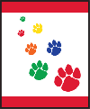

Paws On The Path

Satisfy these requirements with your family by hiking in a park or even better a New Jersey Wildlife Management Area! They are all over the state!
Your Kit!
To help you in your adventure, we have a kit for you of some of your essential items and a compass to help you find your way!
For this adventure, our family went on a hike through the Makepeace Lake Wildlife Management Area! We were geo-caching, and on the hunt for interesting things! We hiked 1.2 miles along a very scenic trail, and then back again.
Check out the requirements below and the videos to find out what you need to take with you and what you need for your hike.
At our next virtual meeting, tell us about your hike or one that you've done in the past and some interesting things that you've found. We'll have a guest speaker who will tell us some interesting natural things you may have missed in the area!
I'm looking forward to hearing about your adventures!
Requirement 1 : Cub Scout Six Essential Items
Show you are prepared to hike safely in any outdoor setting by putting together the Cub Scout Six Essentials to take along on your hike.
Requirement 2 : The Buddy System
Tell what the buddy system is and why we always use it in Cub Scouting. Describe what you should do if you get separated from your group while hiking.
Requirement 3 : Appropriate Wear
Choose the appropriate clothing to wear on your hike based on the expected weather.
Requirement 4 : Outdoor Code
Before hiking, recite the Outdoor Code and the Leave No Trace Principles for Kids with your leader. (This may be combined with requirement 3 of the Call of the Wild adventure.) After hiking, discuss how you showed respect for wildlife.
Requirement 5 : Go on a 1-Mike Hike
Go on a 1-mile hike with your den or family. Find two interesting things that you've never seen before and discuss them with your den or family.